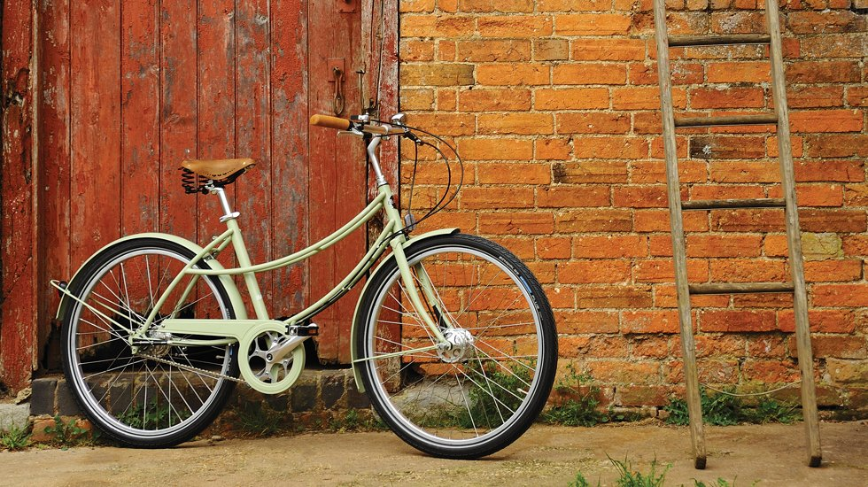

How to register a bike
- Open your account page
- Click on "Add Bike +" in the middle of the page
-
Enter your bikes details in each text box as labelled.
Fill in as much information as you can, as the more we have the more likely we can return your stolen property. -
Add any images you have for your bike.
- To add an image, click on "+ Add Image" then select a single image file.
- To remove an image, click on "Remove" below the image you want to remove.
- Click "Add Bike" at the bottom of the webpage.